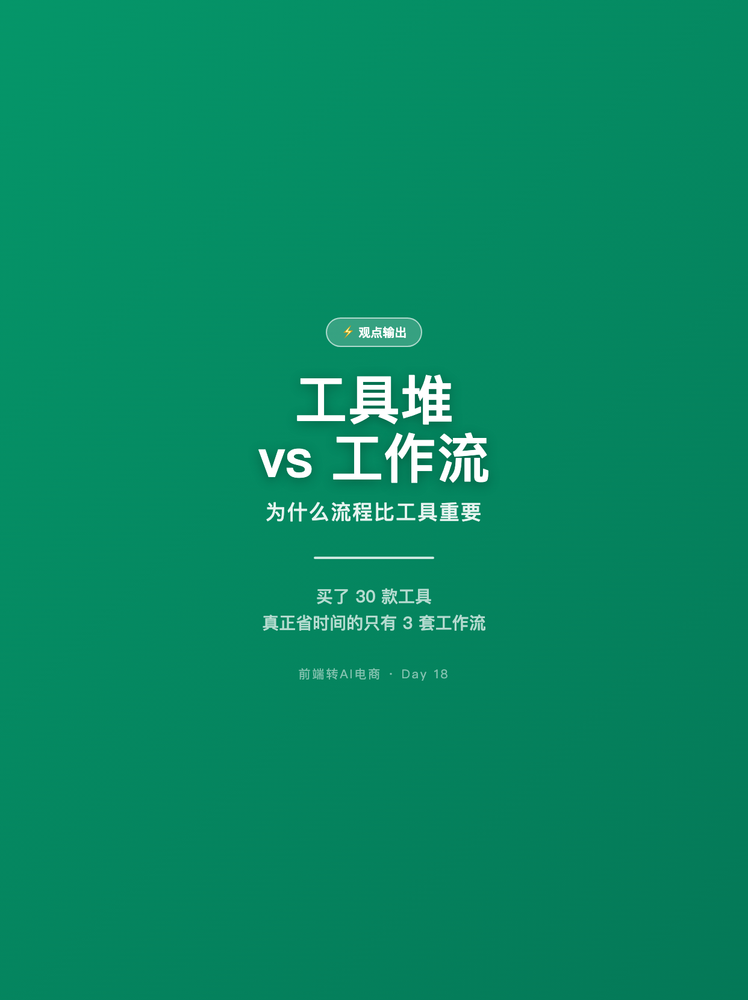
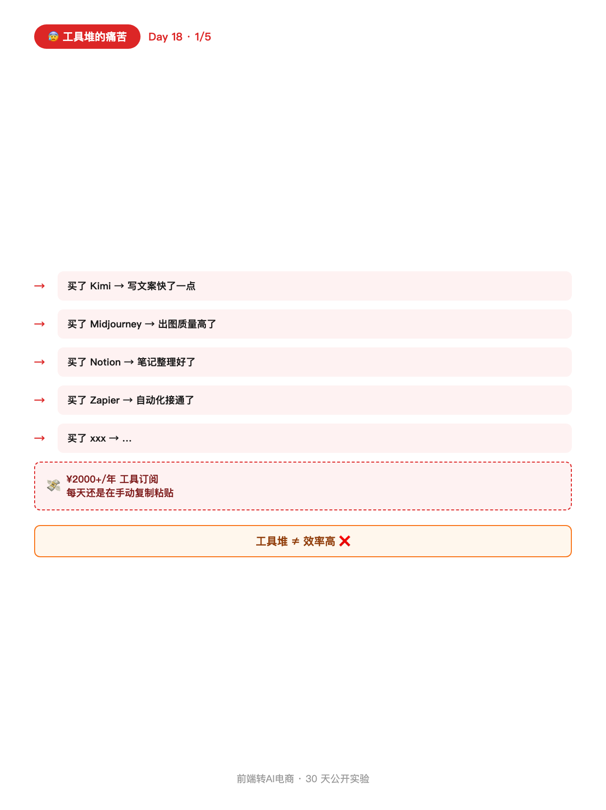
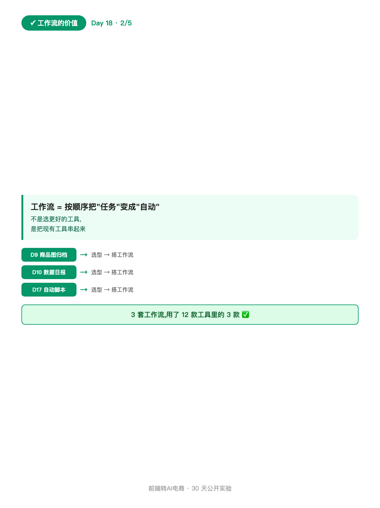
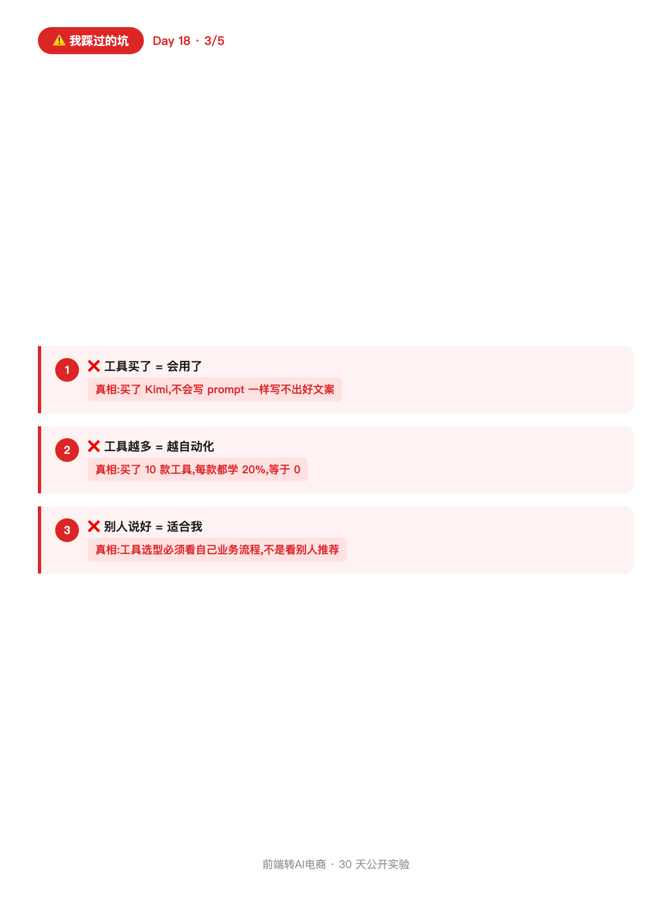
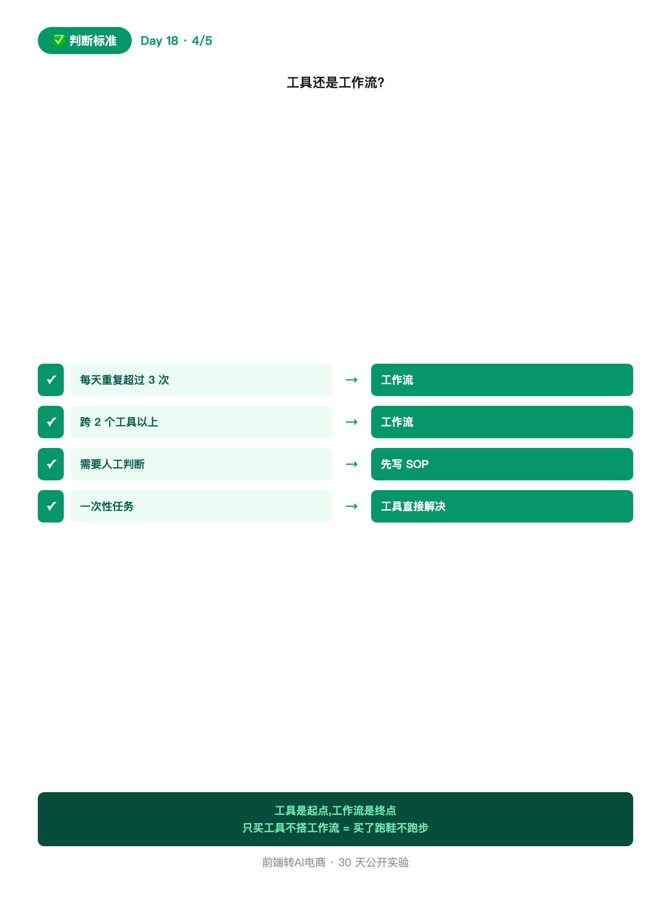
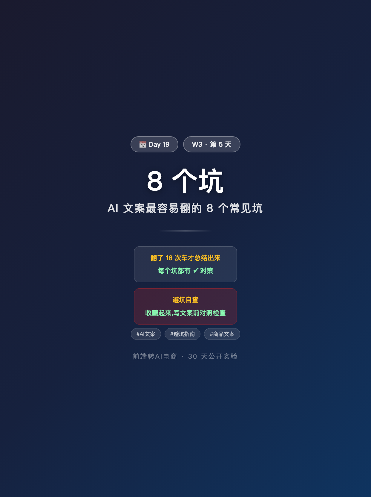

使用说明: 所有内容已按发布标准预排好,发布前请用最下方 3 个复制按钮。
6 张图按顺序上传,标题"工具堆 vs 工作流"(XHS 上限 20 字 ✓,8 字)。
配图通过 HTML+Chrome headless 截图 1242×1660 PNG 生成(中文 100% 清晰)。






工具堆 vs 工作流
做了 2 年电商,用过的 AI 工具超过 30 款。 但真正帮我省时间的,只有 3 套工作流。 不是工具不够,是工作流没搭起来。 ───── 工具堆的痛苦 ───── 买了 Kimi → 写文案快了一点 买了 Midjourney → 出图质量高了 买了 Notion → 笔记整理好了 买了 Zapier → 自动化接通了 买了 xxx → … 结果:每年 ¥2000+ 工具订阅费, 每天还是在手动复制粘贴。 工具堆 ≠ 效率高 ───── 工作流的价值 ───── 工作流 = 按顺序把"任务"变成"自动" 不是选更好的工具, 是把现有工具串起来。 D9 商品图归档:D16 选型工具 → 工作流 D10 数据日报:D16 选型工具 → 工作流 D17 自动脚本:D16 选型工具 → 工作流 3 套工作流,用了 12 款工具里的 3 款。 ───── 我踩过的坑 ───── ❌ 工具买了=会用了 真相:买了 Kimi,不会写 prompt 一样写不出好文案 ❌ 工具越多=越自动化 真相:买了 10 款工具,每款都学 20%,等于 0 ❌ 别人说好=适合我 真相:工具选型必须看自己业务流程,不是看别人推荐 ───── 判断标准:工具还是工作流? ───── ✅ 每天重复超过 3 次 → 工作流 ✅ 跨 2 个工具以上 → 工作流 ✅ 需要人工判断 → 先写 SOP 再自动化 ✅ 一次性任务 → 工具直接解决 一句话: 工具是起点,工作流是终点。 只买工具不搭工作流,等于买了跑鞋不跑步。 ───── 评论区 ───── 你现在在"堆工具"还是"搭工作流"? 👇 评论区:扣"堆工具"或"搭工作流" 我选 10 条给"搭工作流"的具体步骤。 关注我,看 30 天跑完我会得出什么结论 🌱
#前端转AI电商
#工作流
#AI工具
#效率提升
#程序员思维
♡ 收藏💬 评论↗ 分享
📋 一键复制
📊 D18 数据复盘
内容定位: 观点型笔记,承接 D17(自动化脚本)→引出 D19(AI 文案避坑)
对比结构: 工具堆的痛苦 vs 工作流的价值,结尾给判断标准
3 个坑: 全部是我自己的真实踩坑,不是教科书
互动钩子: "堆工具" or "搭工作流" 二选一,评论区给步骤
🚀 发布前 15 分钟 SOP
- 打开小红书 App → 创建笔记
- 选 6 张图(封面 1 + 内页 5),按顺序排好
- 选 3:4 竖图
- 标题:工具堆 vs 工作流(XHS 上限 20 字 ✓,8 字)
- 正文:点"复制正文"按钮粘贴
- 加 5 个标签
- 选发布时间:周六 20:00-21:00
- 发布
📈 发布后 24 小时 SOP
| 时间 | 动作 | 目标 |
|---|---|---|
| 10 分钟 | 自己评论("你现在在堆工具还是搭工作流?") | 激活二选一评论区 |
| 30 分钟 | 每条评论认真回复(尤其"搭工作流"要追问具体步骤) | 收集 D19 素材 |
| 2 小时 | 截图保存 D18 数据 | W3 中段素材 |
| 6 小时 | 看一次数据(曝光/收藏/评论) | 判断是否二次推 |
| 24 小时 | 统计"堆工具/搭工作流"比例 | D19 素材 |
🎯 Day 18 数据目标
| 指标 | 目标 | 备注 |
|---|---|---|
| 曝光 | ≥ 1800 | 观点类周末高曝光 |
| 收藏率 | ≥ 8% | 判断标准高收藏 |
| 评论 | ≥ 100 | 二选一强互动 |
| 涨粉 | ≥ 120 | 观点类精准涨粉 |
💡 关键设计点
1. 标题 = 最简对比
- "工具堆 vs 工作流" = 最简对比,0 门槛理解
- 字数 8 字,XHS 上限 20 ✓
- 副标题 "为什么流程比工具重要" 在封面图上体现
2. 正文 = 痛苦 + 价值 + 坑 + 标准
- 工具堆的痛苦(¥2000+ 订阅费,每天还在手动)
- 工作流的价值(3 套用了 12 款工具里的 3 款)
- 3 个踩坑(买了=会用了/越多=越自动化/别人说好=适合我)
- 判断标准(4 条 ✅/❌)
- 互动(堆工具 or 搭工作流)
3. 与 D17 的关系
- D17: 怎么从 0 搭第一段工作流(技术)
- D18: 为什么工作流比工具重要(观点)
- 技术+观点 = D17 做事,D18 讲道理